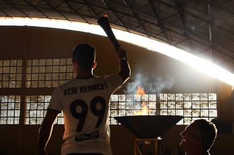

O IFRN Campus Parnamirim sediou, na última terça-feira (26), a abertura dos da Escolar de Parnamirim (JUVEP’s). O evento contou com um grande desfile feito por vários alunos de escolas municipais, estaduais, federal e privadas, entoados pela banda marcial da Escola Municipal Maria do Céu Fernandes.

A abertura dos jogos foi realizada pela Prefeitura de Parnamirim, através da Secretaria Municipal de Turismo, Esporte e Lazer (SETEL), em parecia com o campus Parnamirim. Esta é a primeira vez que o município realiza esta competição esportiva, que deve contar com 44 escolas, sendo 20 escolas municipais, 7 escolas estaduais, 16 particulares, e 1 federal.